PKOS 나의지식서재 사용 설명서와 실습
2026년 10월 2일 판 · 주소 https://legoschool.github.io/pkos-library/ · 설명서 https://legoschool.github.io/pkos-library/manual/
PKOS에 적은 기록은 서버가 아니라 지금 쓰고 있는 브라우저 안에 저장됩니다. 같은 PC라도 크롬에서 쓴 기록은 엣지에서 보이지 않고 브라우저 설정에서 인터넷 사용 기록과 사이트 데이터를 지우면 기록도 함께 지워집니다. 기기를 옮기거나 브라우저 데이터를 지우기 전에는 반드시 백업 파일을 내려받습니다. 로그인은 없고 이 주소에는 기록을 받아 두는 서버도 없습니다. 다만 「받아쓰기」는 브라우저의 음성 인식을 쓰므로, 받아쓰는 동안의 말소리는 크롬·엣지를 만든 회사의 음성 서비스에서 처리될 수 있습니다.
실습은 모두 체험 서재에서 합니다. 체험 서재는 주소 끝에 ?demo=1이 붙은 서재로, 가상 기록 48개가 들어 있고 내 서재와 저장소가 따로라서 실습 중에 무엇을 가져오거나 지워도 내 기록은 바뀌지 않습니다.
준비물
- PC의 크롬 또는 엣지. 카드 파일 자동 반영과 PC 폴더 자동 백업은 PC의 크롬·엣지에서만 됩니다.
- 실습 카드 파일 1차 practice-1.pkem (카드 109장)
- 실습 카드 파일 2차 practice-2.pkem (1차를 고친 판)
- 선택: 휴대폰. 같은 주소로 열리지만 휴대폰 서재는 PC 서재와 따로입니다.
실습 카드는 가상의 수업·연수·연구 자료를 흉내 낸 것이고 실제 학교, 학생, 교사 정보는 들어 있지 않습니다.
준비 조건: 구글 드라이브 데스크톱과 오프라인 사용
기록 쓰기와 정리, 지식맵, 백업 파일은 브라우저만 있으면 됩니다. 드라이브에 있는 원본과 이어지는 기능은 PC에 구글 드라이브 데스크톱이 있어야 하고, 쓰는 폴더를 「오프라인으로 사용」으로 두어야 바로 열립니다. 「온라인에서만 사용 가능」으로 두면 파일을 열 때마다 내려받아 느리고, 인터넷이 끊기면 열리지 않습니다.
| 기능 | 필요한 것 |
|---|---|
| 기록 쓰기·정리·지식맵·백업 파일 | 브라우저만 |
| 카드의 「원본 열기」·「드라이브 미리보기」, 바둑판 그림 | 그 파일을 볼 수 있는 구글 계정으로 브라우저 로그인 |
| 카드의 「탐색기」·「경로 복사」 | 구글 드라이브 데스크톱(파일 탐색기의 「Google Drive (G:)」). 「탐색기」는 탐색기 연결 도구도 설치 |
| 카드 파일 연결, PC 폴더 자동 백업 | PC의 크롬·엣지. 파일과 폴더가 드라이브에 있으면 구글 드라이브 데스크톱과 「오프라인으로 사용」 |
| 변환기 Windows 앱·파이썬판 | 바꿀 폴더가 드라이브에 있으면 구글 드라이브 데스크톱과 「오프라인으로 사용」. 코랩판은 필요 없음 |
| 사이트 만들기(제작기) | PC의 크롬·엣지. 작업 폴더가 드라이브에 있으면 같은 준비 |
- 구글 드라이브 데스크톱(https://www.google.com/drive/download/)을 설치하고 자료가 있는 구글 계정으로 로그인합니다.
- 파일 탐색기 왼쪽 「내 PC」 아래에 「Google Drive (G:)」가 생겼는지 봅니다.
- G: 안의 「내 드라이브」나 쓰는 폴더를 마우스 오른쪽 단추로 눌러 「오프라인 액세스 › 오프라인으로 사용」을 고릅니다.
- 폴더 아이콘에 초록색 체크 표시가 붙을 때까지 기다립니다. 오프라인으로 둔 폴더 크기만큼 PC 저장 공간을 씁니다.
「경로 복사」는 「G:\내 드라이브\」로 시작하는 경로를 만듭니다. 드라이브 문자가 G가 아니거나 영어 화면(My Drive)이면 앱의 「설정 › 구글 드라이브 위치」에서 바꿉니다. 같은 안내는 앱의 「서재 현황 › 준비 조건」에도 있습니다.
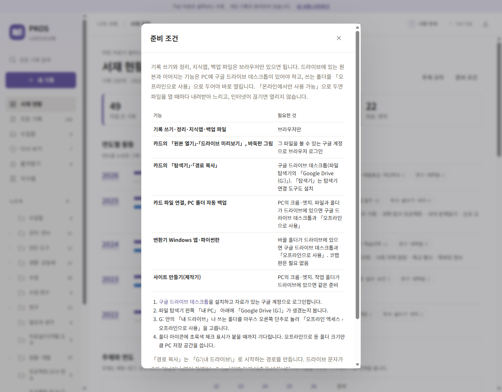
80분 실습 진행표
진행자는 아래 순서로 화면을 함께 보며 진행합니다. 각 실습의 마지막 칸은 참가자가 해냈는지 눈으로 확인할 수 있는 행동입니다.
| 순서 | 실습 | 시간 | 끝났을 때 확인할 행동 |
|---|---|---|---|
| 0 | 시작 안내: 기록이 저장되는 곳 | 5분 | 참가자가 "기록은 이 브라우저에 저장된다"를 자기 말로 말한다 |
| 1 | 체험 서재 열고 화면 읽기 | 5분 | 화면의 여섯 구역을 손으로 가리키며 이름을 말한다 |
| 2 | 첫 기록 쓰기와 다른 기록 연결 | 10분 | 새 기록 아래 「함께 읽을 기록」에 직접 연결한 기록이 보인다 |
| 3 | 기록 찾기 | 5분 | 본문 속 낱말 하나로 방금 쓴 기록을 찾아 연다 |
| 4 | 실습 카드 1차 가져오기 | 5분 | 「모든 기록」 숫자가 158이 되고 노트북에 영역 6개가 생긴다 |
| 5 | 카드 읽기, 원본 열기, 바둑판 보기 | 5분 | 「원본 열기」로 이 설명서의 원본 열기 실습 부분을 새 탭에 연다 |
| 6 | 서재 현황과 지식맵 | 15분 | 「서재 현황」에서 2025를 눌러 그해 기록 목록을 열고, 지식맵에서 선 하나를 눌러 연결 이유 창을 연다 |
| 7 | 2차 카드 파일로 갱신하기 | 10분 | 알림의 "고친 카드 1개는 그대로 둠"을 읽고 휴지통에서 카드 한 장을 복원한다 |
| 8 | 백업 내보내기 | 5분 | 다운로드 폴더에서 PKOS-백업-날짜.pkem 파일을 찾아 보여 준다 |
| 9 | PC 선택 실습: 카드 파일 자동 반영, 탐색기 연결 | 10분 | 설정 창에 연결한 카드 파일 이름이 나온다 |
| 10 | 마무리 점검과 체험 서재 되돌리기 | 5분 | 점검표 8칸을 채우고 체험 서재가 기록 48개로 돌아간다 |
합계는 80분이고 실습은 시작 안내를 포함해 11개입니다. 시간이 모자라면 실습 9를 빼고 실습 6의 3D 지도는 시연만 합니다. 가장 많이 막히는 곳은 실습 4의 파일 고르기입니다. 내려받은 파일이 어디 있는지 모르는 참가자가 많으므로, 진행자는 실습 4 전에 브라우저의 다운로드 목록(Ctrl+J)을 한 번 열어 보여 줍니다.
0. 처음 열었을 때
주소를 처음 열면 서재 안내 다섯 장이 차례로 나옵니다. 「둘러보기」로 넘기거나 「닫기」로 건너뛸 수 있고 닫은 뒤에는 화면 오른쪽 위 「사용 안내」에서 다시 봅니다.
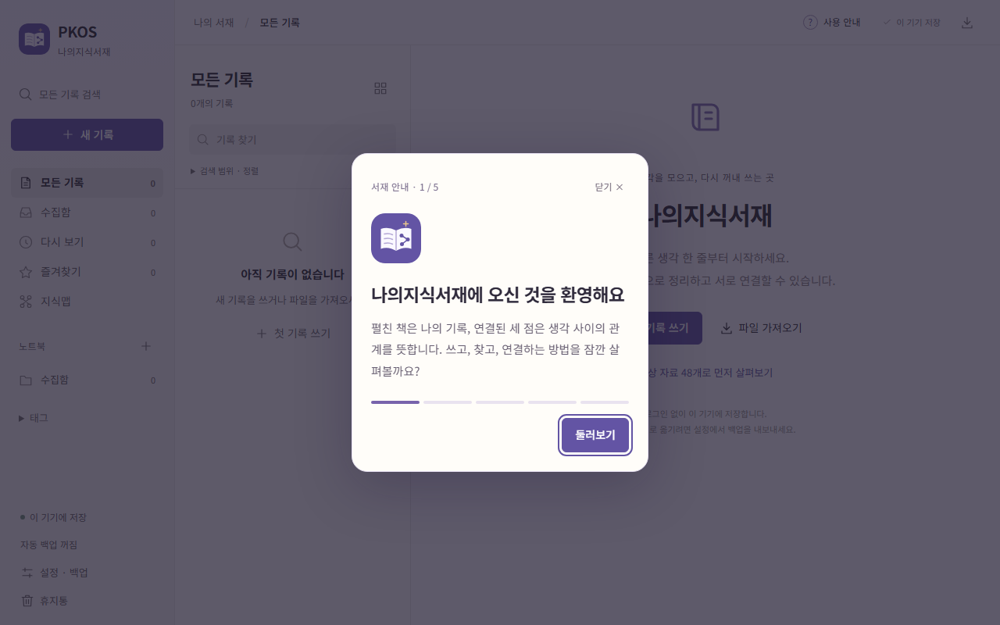
안내를 닫으면 빈 내 서재가 보입니다. 내 서재에 바로 쓰려면 ①을, 이미 가진 백업이나 Markdown 파일을 넣으려면 ②를 누릅니다. 실습은 ③을 눌러 체험 서재에서 합니다.
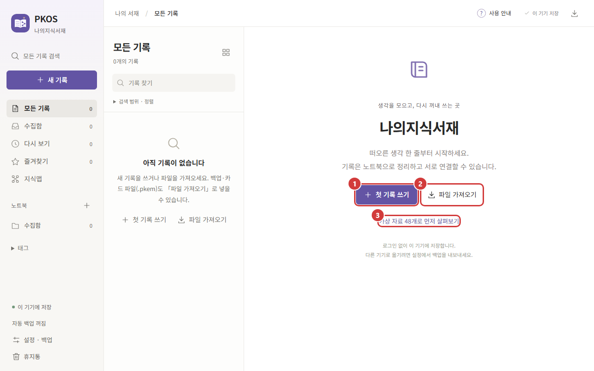
- ①「첫 기록 쓰기」
- ②「파일 가져오기」: Markdown, 텍스트, 백업·카드 파일(.pkem)을 서재에 넣습니다. .pkem 파일을 고르면 「백업 파일 가져오기」와 똑같이 기록으로 풀려 들어갑니다.
- ③「가상 자료 48개로 먼저 살펴보기」: 체험 서재로 갑니다.
실습 1. 체험 서재 열고 화면 읽기 (5분)
목표: 화면의 여섯 구역을 가리키며 각각 무엇을 하는 곳인지 말한다.
- 주소창에
https://legoschool.github.io/pkos-library/?demo=1을 입력하거나 첫 화면에서 「가상 자료 48개로 먼저 살펴보기」를 누릅니다. - 화면 맨 위에 보라색 띠와 "가상 자료로 살펴보는 서재"가 보이는지 확인합니다.
- 아래 그림의 번호 ①~⑥을 하나씩 화면에서 찾아 가리킵니다.
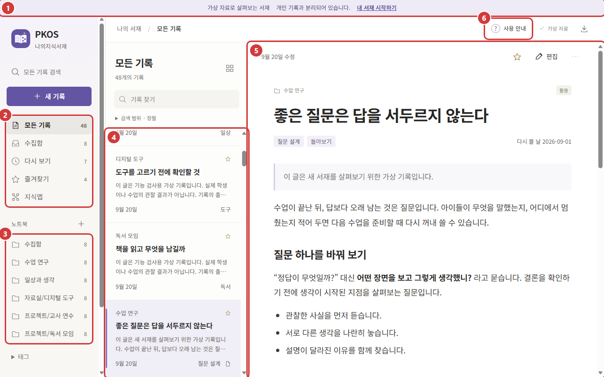
- ①체험 서재 표시: 이 띠가 보이는 동안은 체험 서재입니다. 띠의 「내 서재 시작하기」를 누르면 내 서재로 갑니다.
- ②보기 메뉴: 「모든 기록」, 상태가 '수집'인 기록만 모은 「수집함」, 다시 볼 날짜가 오늘이거나 지난 「다시 보기」, 「즐겨찾기」, 「지식맵」입니다. 오른쪽 숫자는 해당 기록 수입니다.
- ③노트북: 기록을 담는 폴더입니다.
수업/과학 탐구 프로젝트처럼 빗금으로 아래 노트북을 만들고 위 노트북을 누르면 아래 노트북의 기록까지 함께 보입니다. 아래 노트북은 위 노트북 밑에 끝 이름만 들여 써서 보이고, 오른쪽 숫자는 아래 노트북의 기록까지 센 수입니다. - ④기록 목록: 고른 보기나 노트북의 기록이 날짜 순으로 나옵니다. 직접 쓴 기록은 고친 날, 자료 카드는 문서·글의 날짜로 줄을 서고 묶음 카드는 목록 끝에 있습니다. 노트북을 고르면 그 노트북의 묶음 카드가 맨 앞에 옵니다.
- ⑤읽기 화면: 목록에서 고른 기록을 읽습니다.
- ⑥「사용 안내」: 처음 열 때 나온 안내 다섯 장을 다시 봅니다.
막히면: 보라색 띠가 없다면 주소 끝의 ?demo=1이 빠진 것이고 그 상태에서 하는 실습은 내 서재에 남습니다. 주소를 다시 입력합니다.
실습 2. 첫 기록 쓰기와 다른 기록 연결 (10분)
목표: 노트북과 태그를 정한 새 기록 하나를 저장하고 체험 서재의 다른 기록 하나와 직접 연결한다.
- 왼쪽 「새 기록」을 누릅니다.
- 제목에
오늘 수업에서 남은 질문, 본문에 아래 두 줄을 적습니다.모둠 토론 뒤에 "왜 그렇게 생각했니?"라고 물었더니 세 모둠이 근거를 다시 찾았다.다음 시간에는 근거 문장을 먼저 고르게 한다. - 「노트북 · 태그 · 다시 볼 날짜」를 눌러 펼치고 노트북은 「수업 연구」, 태그 칸에는
질문, 수업 성찰을 적습니다. 태그는 쉼표로 나눕니다. 태그 칸 아래에는 이 글과 비슷한 기록에 붙은 태그가 제안되고(글이 아직 짧으면 자주 쓰는 태그), 누르면 태그 칸에 더해집니다.
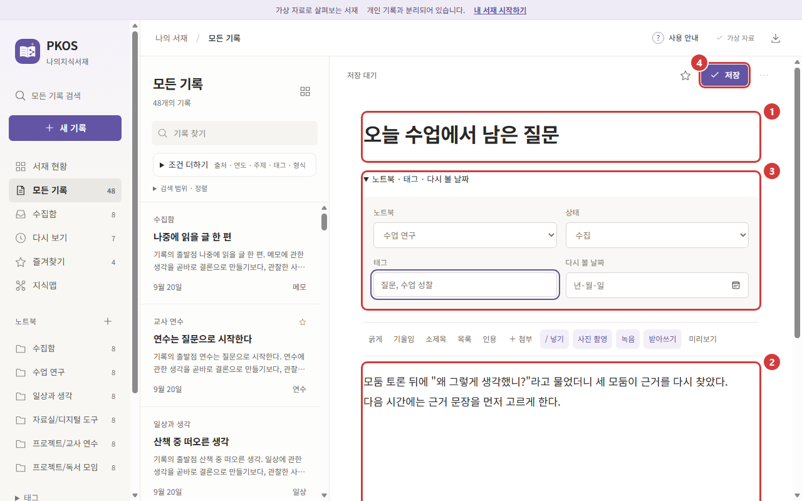
- ①제목
- ②본문: Markdown 문법을 그대로 씁니다. 입력을 멈추고 1초가 안 되어 자동으로 저장되며 위쪽 표시가 "저장 대기"에서 "저장됨"으로 바뀝니다. Ctrl+S를 누르면 그 자리에서 바로 저장합니다.
- ③노트북, 상태(수집·정리 중·활용·보관), 태그, 다시 볼 날짜와 태그 제안
- ④「저장」: 편집을 마치고 읽기 화면으로 돌아갑니다.
- 본문 끝 새 줄에서
/를 칩니다. 「기록에 넣기」 메뉴가 열리면 방향키로 고르고 Enter로 넣습니다. 제목, 굵게, 목록, 표 같은 서식이 들어 있습니다. Esc로 닫고 방금 친/는 지웁니다.
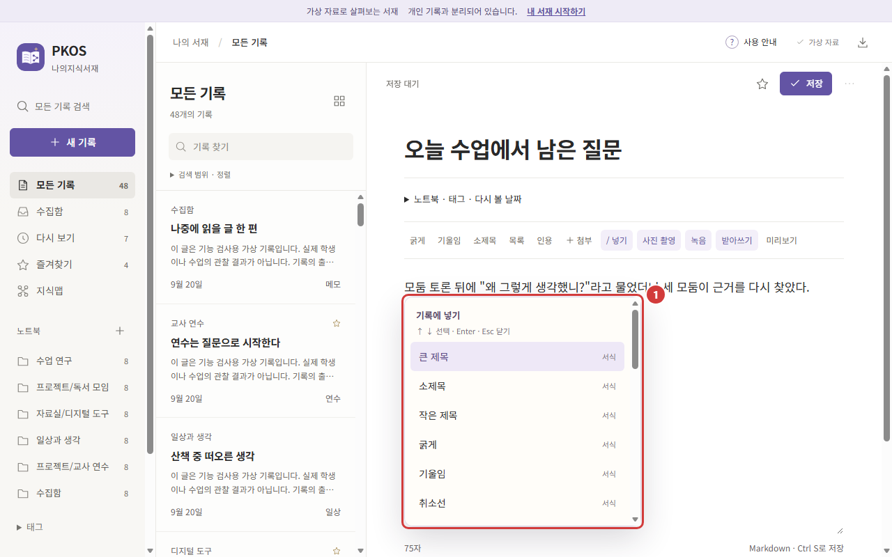
본문 위 도구줄에는 「첨부」, 「사진 촬영」, 「녹음」, 「받아쓰기」가 있습니다. 첨부한 파일은 기록과 함께 저장되고 백업에도 들어갑니다.
PDF·PPTX를 쪽별로 보기
- 기록을 쓰는 화면에서 「첨부」를 눌러 PDF 또는 PPTX를 고릅니다. 한 파일은 20MB까지 넣을 수 있습니다.
- 첨부 이름 옆 「PDF 미리보기」 또는 「슬라이드 미리보기」를 누릅니다. 저장하고 읽는 화면에서도 같은 단추를 쓸 수 있습니다.
- 왼쪽의 작은 페이지 그림(휴대폰에서는 위쪽)을 누르면 그 한 장이 크게 보입니다. 「이전」·「다음」 또는 쪽 번호를 입력해 이동할 수도 있습니다.
- 「쪽 목록」을 누르면 작은 그림 목록을 접고 한 장에 집중할 수 있습니다. 창을 닫으면 작성하던 글로 돌아옵니다.
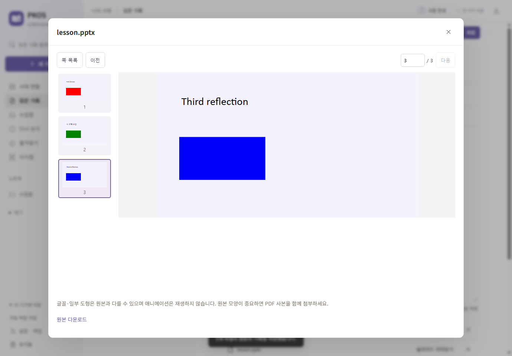
PPTX 미리보기는 파일을 외부 변환 서버로 보내지 않습니다. 글꼴·일부 도형은 PowerPoint 원본과 다를 수 있고 애니메이션은 재생하지 않습니다. 원본 모양을 그대로 보려면 PDF로 저장한 사본을 함께 첨부하세요. 옛 .ppt 파일은 PowerPoint 또는 LibreOffice에서 .pptx나 PDF로 저장한 사본이 필요합니다.
- 편집 화면 아래쪽 「다른 기록 연결」을 누르고 찾기 칸에
질문을 적습니다. 「좋은 질문은 답을 서두르지 않는다」에 표시하고 「연결 저장」을 누릅니다. 찾기 칸을 비워 두면 지금 쓰는 글과 낱말이 겹치는 기록이 먼저 보이고, 낱말을 적으면 제목에 그 낱말이 든 기록부터 나옵니다. 표시한 기록은 찾는 낱말을 바꿔도 그대로 남습니다.
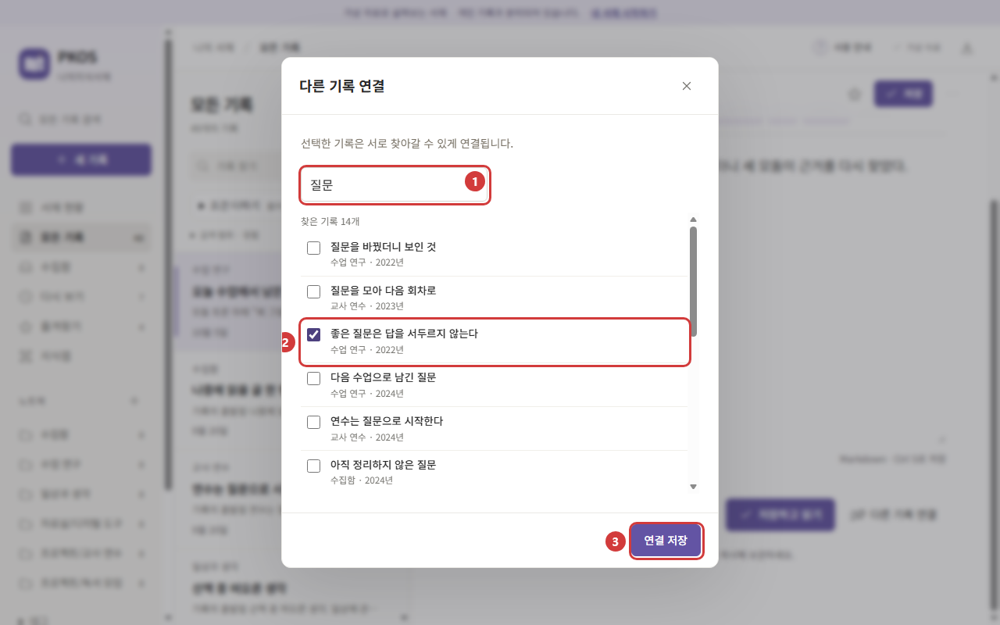
- 「저장」을 누르면 읽기 화면으로 돌아갑니다.
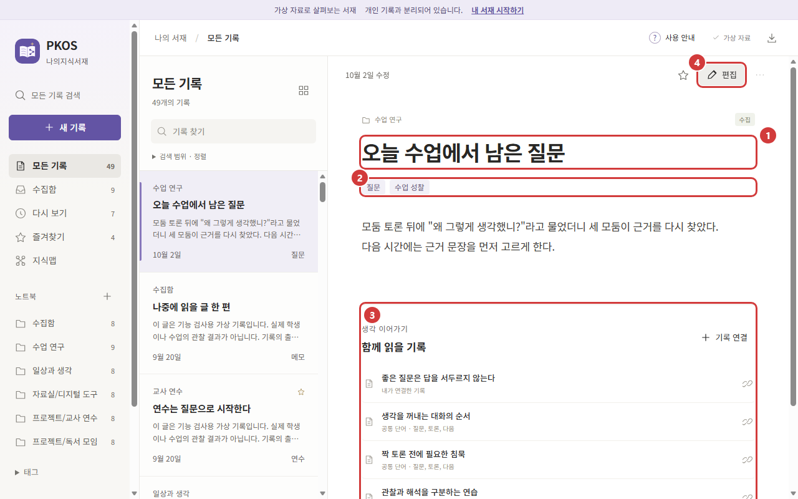
- ①제목
- ②태그: 누르면 같은 태그의 기록만 보입니다.
- ③「함께 읽을 기록」: 5단계에서 직접 연결한 기록이 "내가 연결한 기록"으로 맨 위에 있고 그 아래는 PKOS가 찾아 준 기록입니다. 서재에서 드물게 나오는 낱말이 겹칠수록, 같은 주제 태그가 붙을수록 위에 오고 줄마다 겹친 낱말이나 태그가 적혀 있습니다.
- ④「편집」: 다시 고칩니다.
본문에 [[좋은 질문은 답을 서두르지 않는다]]처럼 다른 기록의 제목을 대괄호 두 겹으로 감싸 적어도 그 기록으로 가는 링크가 됩니다.
막히면: 태그 칸이 보이지 않으면 「노트북 · 태그 · 다시 볼 날짜」 줄이 접혀 있는 것입니다. 같은 기록을 두 창에서 동시에 고치면 "다른 창에서 이 기록을 수정했습니다"라는 안내가 나오는데, 이때는 「현재 글을 새 사본으로 저장」을 눌러 지금 쓴 글을 사본으로 남깁니다.
실습 3. 기록 찾기 (5분)
목표: 본문에 들어 있는 낱말 하나로 실습 2에서 쓴 기록을 찾아 연다.
- Ctrl+K를 누르거나 왼쪽 「모든 기록 검색」을 누르면 「기록 찾기」 칸에 커서가 갑니다.
근거를 적습니다. 목록이 2개로 줄고 실습 2의 기록이 보입니다.- 「검색 범위 · 정렬」을 펼치면 검색 범위(전체·제목·본문·태그·노트북), 상태, 정렬(기본·최근 수정·최근 작성·제목 순)을 고를 수 있습니다. 기본은 찾기 낱말이 있으면 관련도 순이라 제목에 그 낱말이 든 기록과 묶음 카드가 먼저 나옵니다.
- 칸 오른쪽 ×로 검색어를 지웁니다.
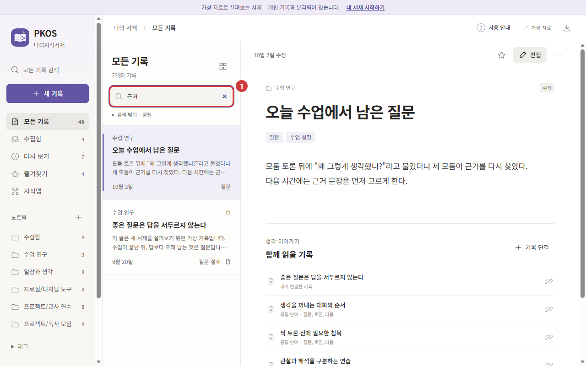
찾기는 지금 고른 보기와 노트북 안에서 합니다. 노트북 「수업 연구」를 고른 채로 찾으면 그 노트북 안에서만 찾습니다.
막히면: 검색어를 지웠는데도 목록이 적다면 「검색 범위 · 정렬」의 상태가 「모든 상태」인지, 왼쪽에서 노트북이나 태그를 고른 채인지 봅니다. 왼쪽 「모든 기록」을 누르면 노트북과 태그 조건이 풀립니다.
실습 4. 실습 카드 1차 가져오기 (5분)
목표: practice-1.pkem을 가져와 「모든 기록」이 158개가 되고 노트북에 영역 6개가 생긴 것을 확인한다.
카드 파일은 여러 기록을 한 파일에 묶은 .pkem 파일이고 백업 파일과 형식이 같습니다. 드라이브의 자료 목록 같은 것을 다른 도구로 카드 파일로 만들어 두면, PKOS에서는 한 번에 가져와 노트북별로 정리된 서재가 됩니다. 실습 카드는 수업, 강의·연수, 연구, 집필·개발, 만든 도구, 생활·공동체의 6개 영역과 그 아래 묶음 16개로 짜여 있습니다.
- 준비물의
practice-1.pkem을 내려받습니다. - 왼쪽 아래 「설정 · 백업」을 누릅니다.
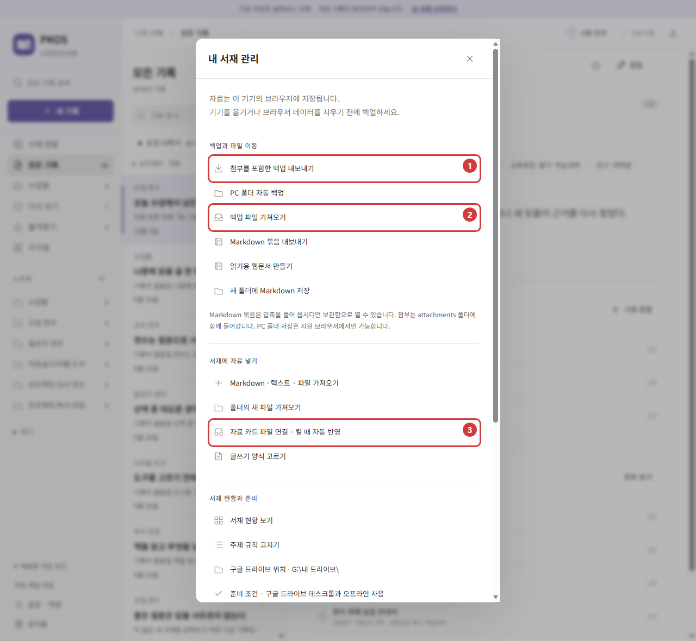
- ①「첨부를 포함한 백업 내보내기」: 실습 8에서 씁니다.
- ②「백업 파일 가져오기」: 백업 파일과 카드 파일을 서재에 더합니다.
- ③「자료 카드 파일 연결 · 켤 때 자동 반영」: 실습 9에서 씁니다.
- ④「사용 설명서 · 실습 자료」: 이 설명서를 엽니다.
- ⑤「체험 서재 처음 상태로 되돌리기」: 체험 서재에서만 보이고 실습 10에서 씁니다.
- ②의 「백업 파일 가져오기」를 누르고 내려받은
practice-1.pkem을 고릅니다. - 확인 창에 "109개 기록을 현재 서재에 더합니다"가 보이면 「가져오기」를 누릅니다.
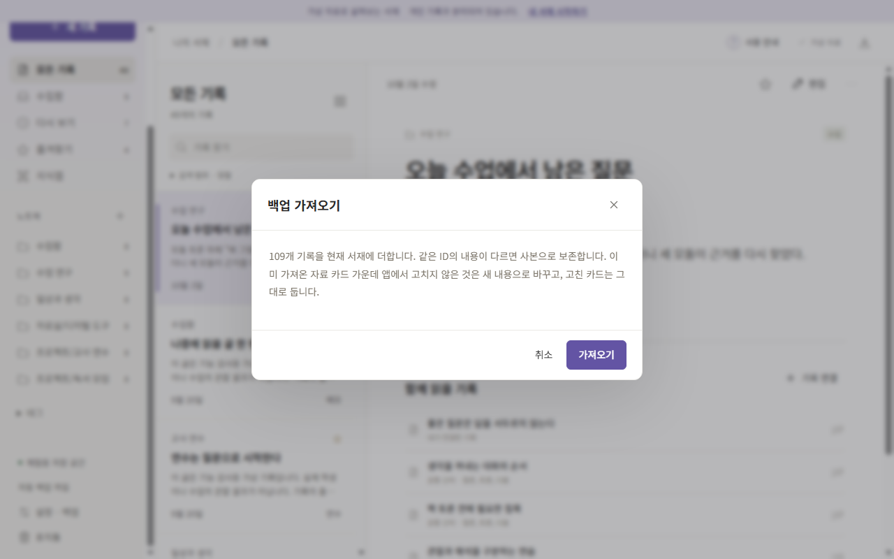
- 화면 아래에 "109개 기록을 가져왔습니다. 충돌 사본 0개."가 잠시 나타납니다. 왼쪽 「모든 기록」은 158입니다(체험 기록 48개, 실습 2의 기록 1개, 실습 카드 109개). 노트북 목록에는
수업같은 영역 노트북과 그 밑에 들여 쓴과학 탐구 프로젝트같은 묶음 노트북이 생깁니다.
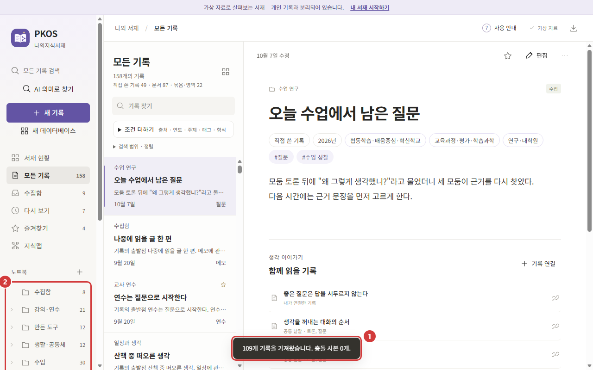
같은 파일을 한 번 더 가져와도 같은 카드가 두 번 생기지 않습니다. 기록마다 고유 번호가 있어서 이미 있는 카드는 건너뛰거나 제자리에서 고칩니다.
막히면: 파일 고르기 창에서 파일이 보이지 않으면 창 왼쪽의 「다운로드」 폴더를 누르거나, 브라우저에서 Ctrl+J로 다운로드 목록을 열어 파일 위치를 확인합니다. 파일이 있는 곳을 알면 탐색기에서 그 파일을 오른쪽 단추로 눌러 「경로로 복사」를 고른 뒤, 파일 고르기 창 아래 「파일 이름」 칸에 붙여 넣고 Enter를 눌러도 됩니다. 휴대폰에서는 「파일」 앱의 다운로드 폴더에서 고릅니다.
실습 5. 카드 읽기, 원본 열기, 바둑판 보기 (5분)
목표: 실습 카드에서 「원본 열기」를 눌러 이 설명서의 「원본 열기 실습」 부분을 새 탭에 연다.
- 「기록 찾기」에
탐구 계획서를 적고 맨 위의 「탐구 계획서」를 엽니다. 카드의 원래 이름은 「2025_과학탐구프로젝트_탐구 계획서」이고, 앞의 연도와 묶음 이름은 목록과 제목에서 덜어 내고 보입니다(편집 화면과 찾기에는 원래 이름이 그대로 있습니다).
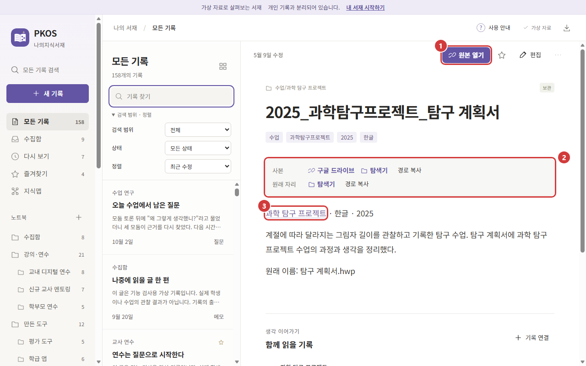
- ①「원본 열기」: 카드가 가리키는 원본 파일을 새 탭에서 엽니다. 실제 자료 카드라면 구글 드라이브의 파일이 열리고 드라이브 권한을 따르므로 파일 주인 계정으로 로그인한 브라우저에서만 열립니다. 실습 카드는 원본 대신 이 설명서로 연결해 두었습니다.
- ②자료 정보: 묶음, 형식, 연도, 원래 이름 같은 카드의 정보와 파일 자리입니다. '사본'은 카드를 만들 때 모아 둔 사본, '원래 자리'는 처음 있던 파일, '마크다운 사본'은 변환기로 바꾼 글입니다. 같은 파일이 드라이브 여러 폴더에 있으면 「같은 문서」에 다른 자리가, 이름이 같은 한글·PDF 판은 「같은 이름」에 형식과 파일 날짜로 나옵니다. 「구글 드라이브」는 웹에서, 「탐색기」는 PC의 파일 탐색기에서 엽니다. 「탐색기」는 실습 9의 탐색기 연결 도구를 설치한 PC에서만 열리고 설치하지 않은 PC에서는 「경로 복사」를 눌러 탐색기 주소창(Ctrl+L)에 붙여 넣습니다.
- ③묶음 링크: 자료 정보의 묶음 이름을 누르면 묶음 카드로 갑니다. 실제 자료 카드라면 자료 정보 아래 「드라이브 미리보기」를 눌러 원본 문서를 구글 드라이브 미리보기로 이 화면 안에서 봅니다(묶음 카드는 폴더, 영상 카드는 영상). 펼친 상태는 이 기기에 남고, 바둑판 보기에는 드라이브가 만든 문서 그림이 붙습니다. 실습 카드는 원본이 이 설명서라 미리보기 단추가 없습니다. 그 아래 본문은 문서의 앞부분이고, 실제 자료 카드에서는 변환기로 꺼낸 글의 처음 1,000자(이름·전화번호는 가림)가 보입니다.
- 「원본 열기」를 누릅니다. 새 탭에 이 설명서가 열리고 아래 「원본 열기 실습」 부분으로 바로 내려가면 성공입니다.
원본 열기 실습
실습 카드의 「원본 열기」를 눌러 이 부분이 새 탭에 열렸다면 실습 5의 2단계까지 마친 것입니다. 이 탭은 닫고 PKOS 탭으로 돌아갑니다.
- 자료 정보의 묶음 「과학 탐구 프로젝트」를 누릅니다. 묶음 카드 아래 「묶음 안 기록」에 기록 수, 연도·형식·주제별 수, 최근 기록 다섯 개가 있고 「목록으로 보기」를 누르면 그 묶음의 기록만 목록에 나옵니다. 영역 카드에는 그 영역의 묶음이 단추로 늘어섭니다.
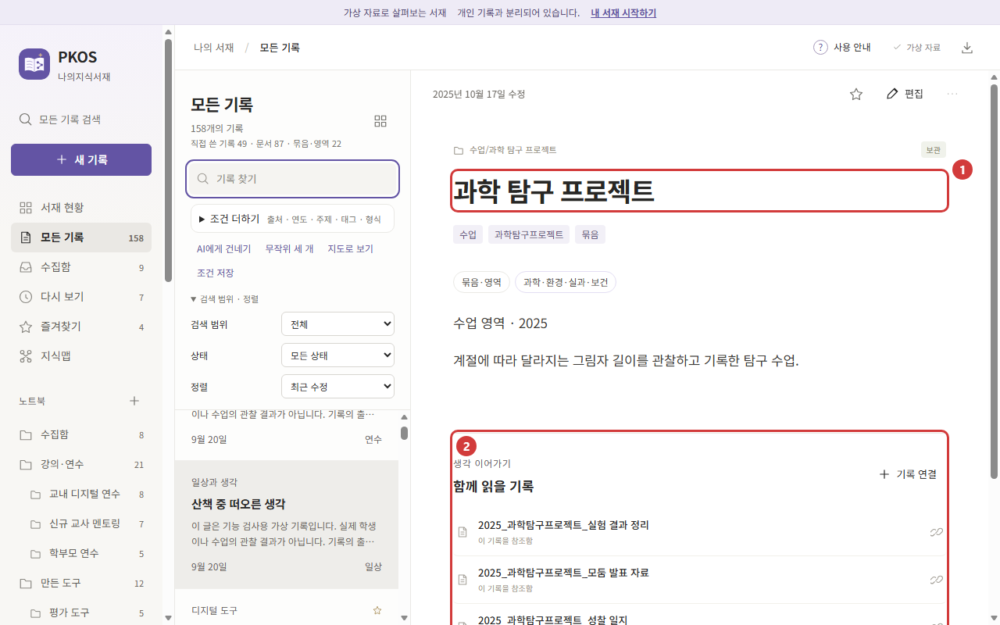
- 왼쪽 노트북에서 「수업」을 누르고 목록 오른쪽 위의 네모 네 칸 단추(「카드로 보기」)를 누릅니다. 목록이 화면 가득 카드 모양으로 펼쳐집니다.
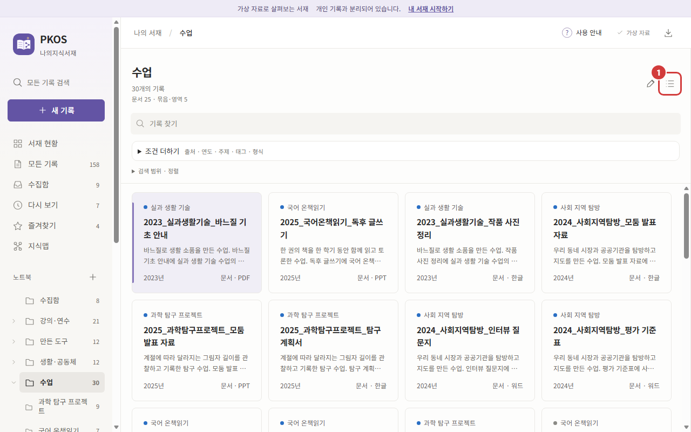
- 카드 하나를 누르면 바둑판이 닫히고 그 기록의 읽기 화면이 열립니다. 카드를 열지 않고 목록으로 돌아가려면 바둑판 보기에서 같은 자리의 줄 모양 단추를 누릅니다.
막히면: 「원본 열기」를 눌러도 새 탭이 열리지 않으면 브라우저가 팝업을 막은 것입니다. 주소창 오른쪽의 팝업 차단 표시를 눌러 이 사이트를 허용합니다.
실습 6. 서재 현황과 지식맵 (15분)
목표: 「서재 현황」에서 2025년 기록 목록을 열고 주제 조건을 하나 더한다. 지식맵에서 영역을 「수업」으로 바꾸고 한 묶음을 확대한 뒤, 선 하나를 눌러 연결 이유를 읽는다.
서재 현황 (5분)
「서재 현황」은 서재에 어떤 기록이 얼마나 있는지 한 화면에 보여 줍니다. 기록이 200개를 넘는 내 서재는 열 때 이 화면이 먼저 나옵니다.
- 왼쪽 맨 위 「서재 현황」을 누릅니다.
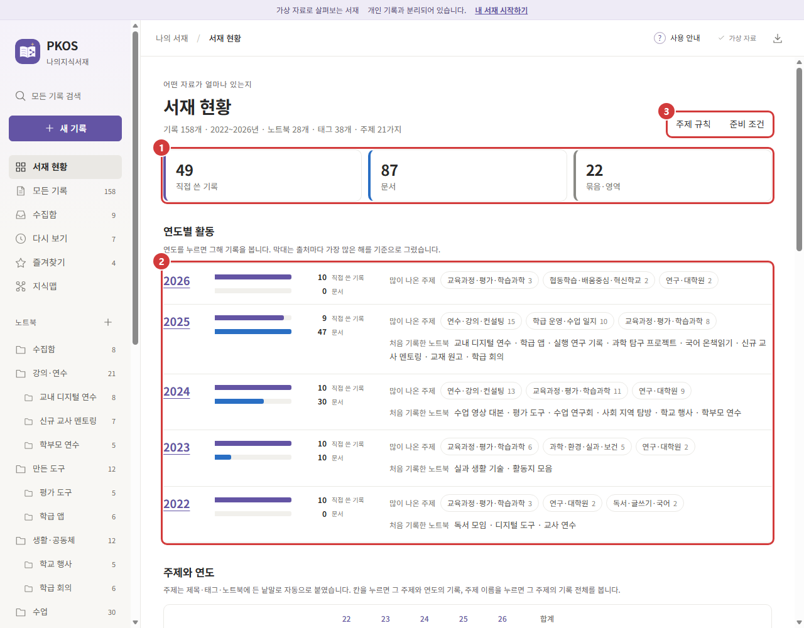
- ①출처별 수: 직접 쓴 기록, 문서(카드), 블로그 글, 영상, 묶음·영역. 누르면 그 출처의 기록만 목록에 나옵니다.
- ②연도별 활동: 해마다 출처별 막대, 많이 나온 주제 세 개, 그해 처음 기록한 노트북. 연도를 누르면 그해 기록이 나옵니다. 아래로 내리면 주제×연도 표, 노트북×연도 표, 자주·드물게 함께 나온 주제, 정리할 거리가 이어지고 표의 칸을 누르면 그 기록이 나옵니다.
- ③「주제 규칙」과 「준비 조건」
- 연도 「2025」를 누릅니다. 목록 위에 「2025년」 조건이 걸리고 목록이 그해 기록으로 바뀝니다.
- 「조건 더하기」를 펼치고 주제 「교육과정·평가·학습과학」을 누릅니다. 주제 단추 옆 숫자는 그 조건을 더했을 때 남는 기록 수입니다. 주제를 둘 이상 고르면 「그리고」(모두 붙은 기록)와 「또는」(하나라도 붙은 기록)을 고릅니다.
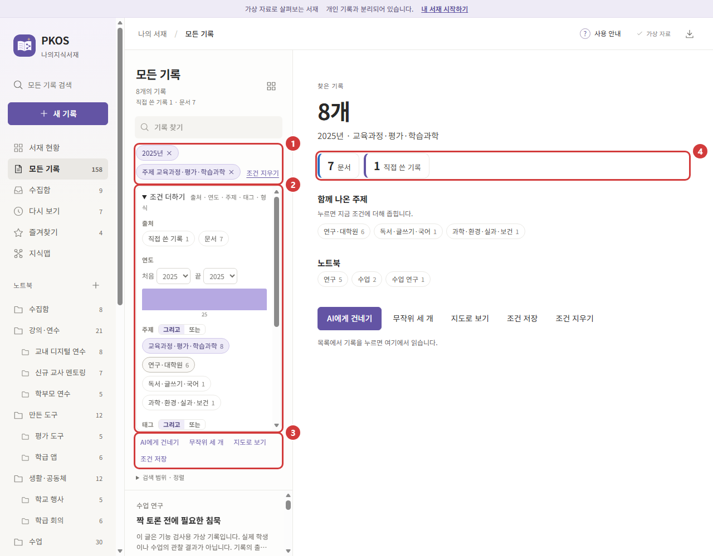
- ①걸린 조건. ×를 누르면 그 조건만 빠지고 「조건 지우기」는 모두 지웁니다.
- ②조건 더하기: 출처, 연도(처음·끝과 막대), 주제, 태그, 문서 형식, 노트북
- ③결과로 할 일: 「AI에게 건네기」, 「무작위 세 개」, 「지도로 보기」(지금 찾은 기록만 지식맵에), 「조건 저장」(왼쪽 「저장한 찾기」에 이름을 붙여 남김)
- ④찾은 기록: 기록을 고르지 않았을 때 오른쪽에 찾은 기록이 출처·연도·주제·노트북별로 몇 개인지 나옵니다. 「함께 나온 주제」를 누르면 그 주제가 조건에 더해져 좁혀지고, 찾은 기록 모두에 붙은 주제는 따로 적힙니다.
- 「AI에게 건네기」를 누릅니다. 질문을 적고 넣을 내용(제목·날짜·노트북·주소, 본문 앞부분, 본문 전체)을 고른 뒤 「복사」를 누르면 AI 대화창에 붙여 넣을 글이 복사됩니다. 앱은 AI를 직접 부르지 않습니다. AI가 준 답은 같은 창의 「AI가 준 답을 기록으로 남기기」에 붙여 넣으면 건넨 기록들과 연결된 새 기록(태그 「AI 제안」)이 됩니다.
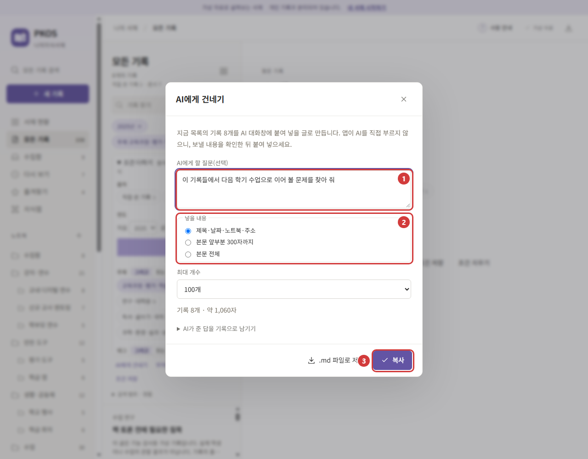
주제는 제목·태그·노트북에 든 낱말로 자동으로 붙습니다. 맞지 않는 주제가 보이면 「서재 현황」의 「주제 규칙」에서 낱말을 고칩니다. 태그는 바뀌지 않습니다. 브라우저의 뒤로 가기를 누르면 앞 화면(서재 현황, 조건을 건 목록, 기록)으로 차례로 돌아갑니다.
지식맵 (10분)
지식맵의 점은 기록 하나, 선은 두 기록 사이의 연결입니다. 점 색은 영역(가장 위 노트북)을 뜻하고 같은 묶음의 기록끼리 가까이 모이며 무리 위에 묶음 이름이 붙습니다. 연결이 많은 기록일수록 점이 큽니다.
- 왼쪽 「지식맵」을 누릅니다.
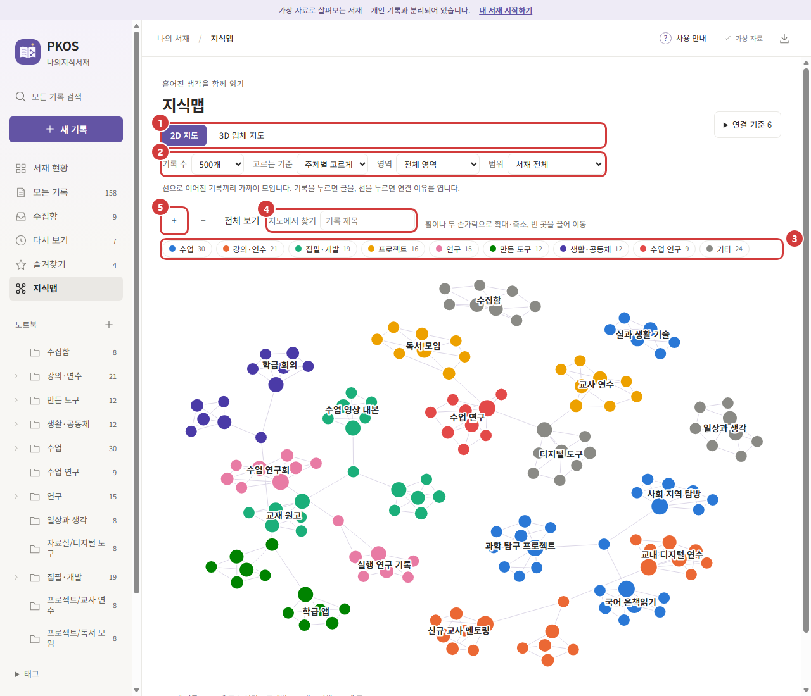
- ①「2D 지도」와 「3D 입체 지도」
- ②지도에 올릴 기록: 「기록 수」는 100개부터 전체까지 고르고 처음 값은 500개입니다. 「고르는 기준」은 주제별 고르게, 최근 수정, 연결 많은 순, 내용 많은 순 가운데 하나이고 「영역」으로 한 영역만 볼 수 있습니다.
- ③색 범례: 기록이 많은 영역 8개까지 색을 주고 나머지는 회색 「기타」로 묶습니다. 범례 항목을 누르면 그 영역만 진하게 보이고 한 번 더 누르면 풀립니다.
- ④「지도에서 찾기」
- ⑤확대, 축소, 「전체 보기」
- 「영역」을 「수업 (30)」으로 바꿉니다. 수업 영역의 묶음 4개가 각각 다른 색으로 다시 칠해집니다.
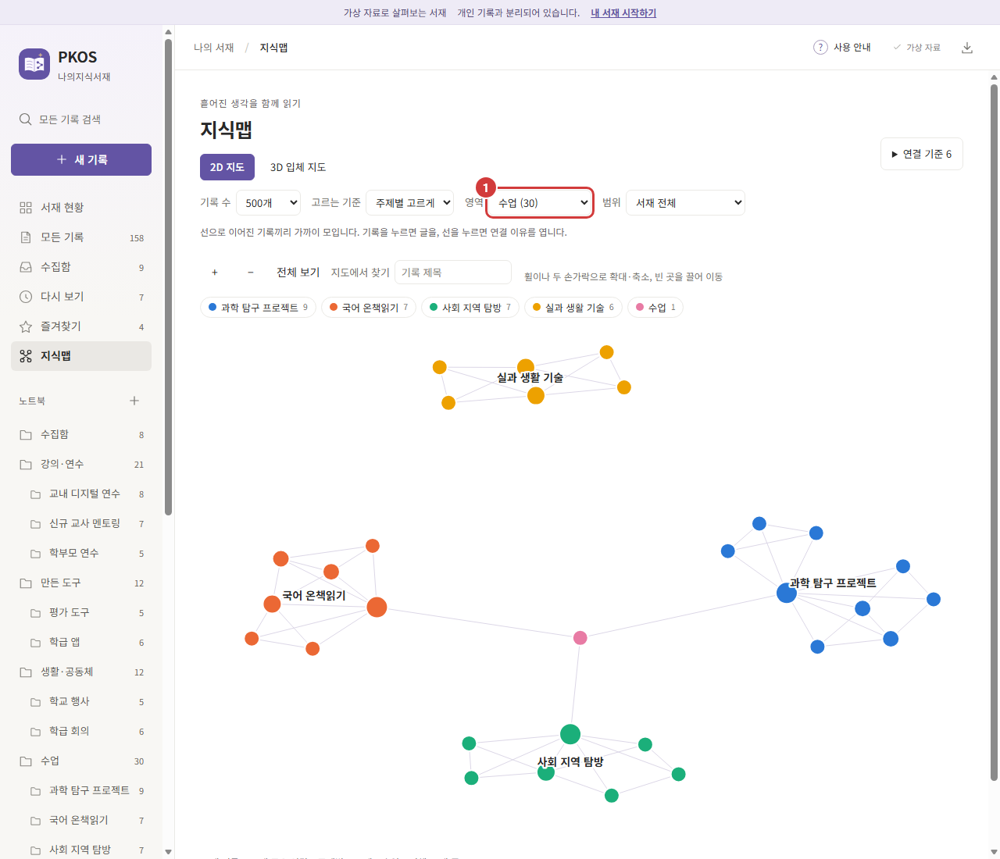
- 「과학 탐구 프로젝트」 무리 위에 마우스를 두고 휠을 위로 굴려 확대합니다. 확대할수록 문서 제목이 보이고 빈 곳을 끌면 지도가 움직입니다. 휴대폰에서는 두 손가락으로 벌립니다. 「전체 보기」를 누르면 처음 크기로 돌아옵니다.
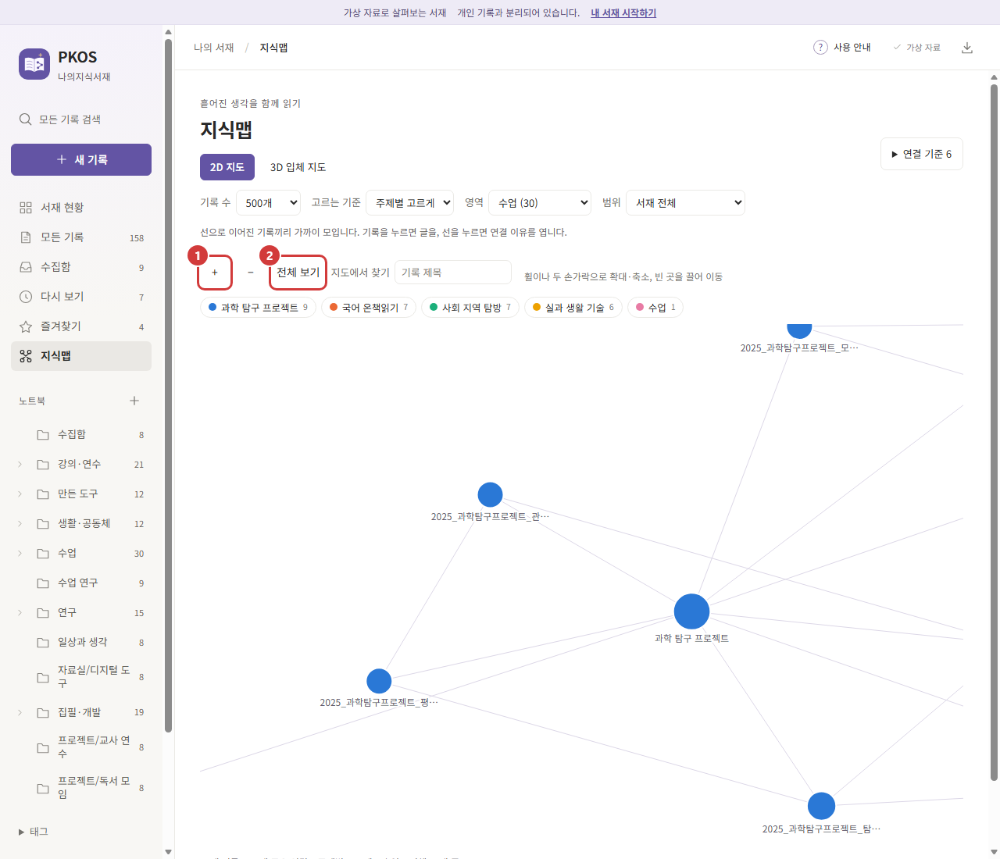
- 「영역」을 「전체 영역」으로 돌리고 「지도에서 찾기」에
평가를 적습니다. 제목에 '평가'가 든 기록 9개만 진하게 남고 나머지는 흐려집니다.
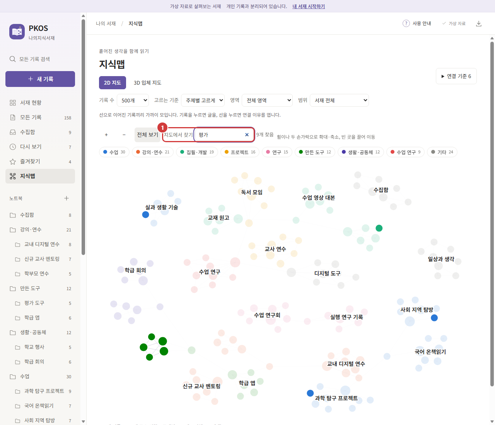
- 점과 점 사이의 선 하나를 누릅니다. 「이 기록들이 연결된 이유」 창에 겹친 본문 단어, 제목 관련어, 같은 태그, 같은 노트북, 직접 연결 여부와 점수가 나옵니다. 본문 단어는 지도에 올린 기록 가운데 드물게 나오는 낱말부터 적고, 연도·형식 태그와 '하는', '많이' 같은 흔한 말은 연결 근거로 세지 않습니다. 지도에는 기록마다 점수가 높은 연결 3개를 먼저 그립니다.
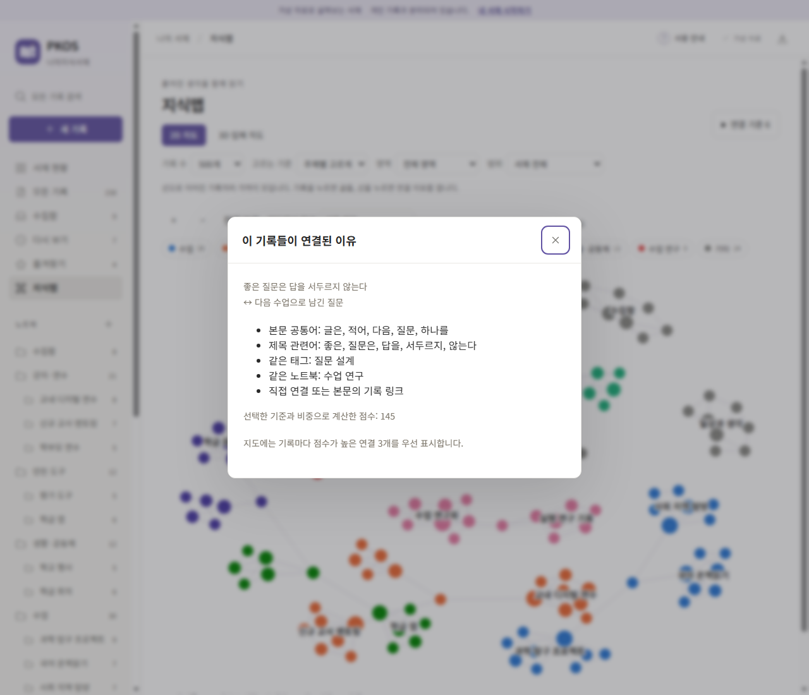
- 오른쪽 위 「연결 기준」을 펼치면 본문 단어, 제목, 비슷한 표현, 태그, 노트북, 직접 연결의 6가지 기준이 있습니다. 「노트북」을 끄면 같은 노트북이라는 이유만으로 이어진 선이 사라집니다.
- 점 하나를 누릅니다. 지도 오른쪽에 그 기록의 미리 보기가 열리고 이 지도에서 이어진 기록과 연결 이유가 보입니다. 이어진 기록을 누르면 미리 보기가 그 기록으로 바뀌고, 지도를 떠나지 않고 연결을 따라갈 수 있습니다.
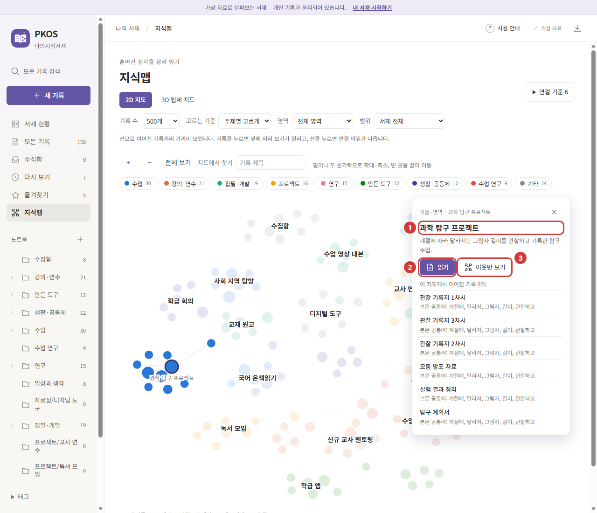
- ①미리 보기: 고른 기록의 영역·연도와 본문 앞부분
- ②「읽기」: 그 기록의 읽기 화면을 엽니다. 「지식맵」을 다시 누르면 지도로 돌아옵니다.
- ③「이웃만 보기」: 고른 기록과 이어진 기록만 남기고 확대합니다. 미리 보기를 닫으면 지도가 다시 다 보입니다.
- 「3D 입체 지도」를 누르고 빈 곳을 끌어 돌려 봅니다. 3D 지도는 기록 500개까지 그립니다.
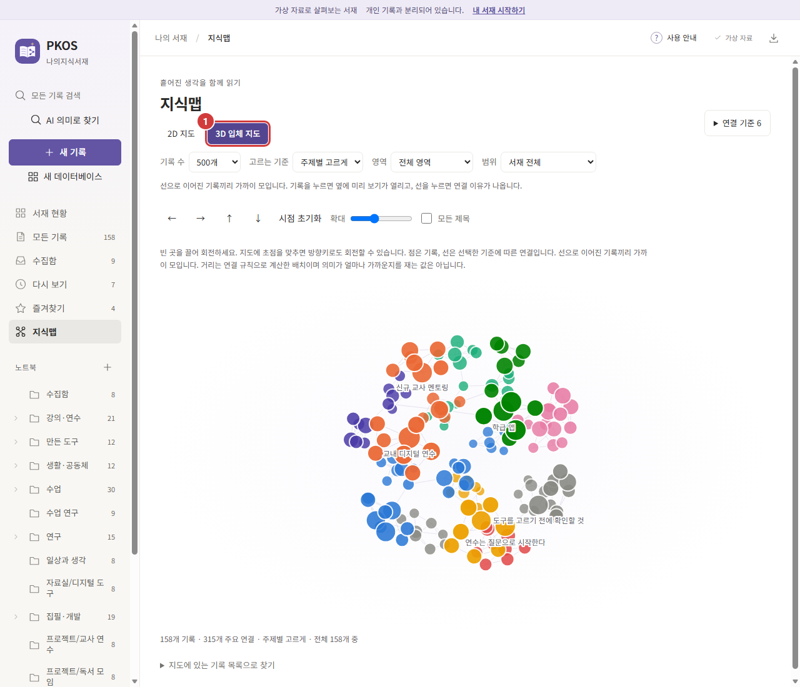
「조건」 목록의 「지도로 보기」로 열면 지금 찾은 기록만 지도에 올라갑니다. 지도 위 「범위」에서 「서재 전체」로 돌립니다.
막히면: 기록이 수천 개인 서재에서 지도가 늦게 뜨면 「기록 수」를 500개 이하로 줄입니다. 확대한 뒤 지도가 비어 보이면 「전체 보기」를 누릅니다. 지도 아래 「지도에 있는 기록 목록으로 찾기」를 펼치면 지도에 올라간 기록을 글 목록으로 볼 수 있습니다.
실습 7. 2차 카드 파일로 갱신하기 (10분)
목표: 카드 한 장을 고친 뒤 practice-2.pkem을 가져오고 알림의 숫자 네 개가 각각 무엇인지 말한 다음 휴지통에서 카드 한 장을 복원한다.
같은 카드 파일의 새 판을 가져오면 PKOS는 카드마다 아래 규칙을 따릅니다.
| 카드 상태 | 새 판을 가져오면 |
|---|---|
| 앱에서 고친 적 없는 카드 | 새 내용으로 제자리에서 바뀝니다. 즐겨찾기 표시는 남습니다 |
| 앱에서 고쳤거나 첨부를 붙인 카드 | 내가 고친 그대로 둡니다. 사본도 만들지 않습니다 |
| 새 판에서 빠진 카드 | 휴지통으로 옮깁니다. 휴지통에서 복원할 수 있습니다 |
| 내가 휴지통에 넣은 카드 | 휴지통에 그대로 둡니다 |
- 「탐구 계획서」(원래 이름 「2025_과학탐구프로젝트_탐구 계획서」)를 열고 「편집」을 누른 뒤 본문 끝에
내 메모: 다음에는 관찰 기간을 3주로 늘린다.를 적고 「저장」을 누릅니다. - 실습 4와 같은 방법으로
practice-2.pkem을 가져옵니다. - 알림을 읽습니다.
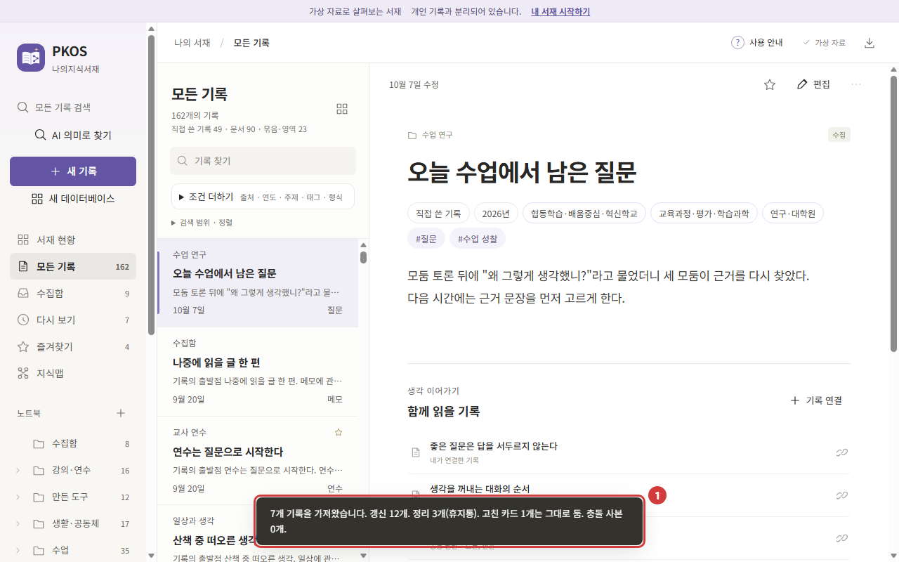
알림은 "7개 기록을 가져왔습니다. 갱신 12개. 정리 3개(휴지통). 고친 카드 1개는 그대로 둠. 충돌 사본 0개."입니다. 7개는 새로 생긴 묶음 「디지털 시민성 수업」의 묶음 카드 1장과 문서 6장이고 갱신 12개는 영역을 옮긴 「학부모 연수」 묶음 카드와 문서 5장, 2차에서 내용을 고친 문서 4장, 묶음 수가 바뀐 영역 카드 3장입니다. 정리 3개는 2차 파일에서 빠진 카드를, 그대로 둔 1개는 1단계에서 고친 탐구 계획서를 가리킵니다. 이 가운데 가장 눈여겨볼 숫자는 '그대로 둠'입니다. 앱에서 덧붙인 메모가 새 판에 덮이지 않았다는 뜻이기 때문입니다.
- 노트북 「생활·공동체」를 누릅니다. 1차에서 강의·연수에 있던 「학부모 연수」 묶음이 이쪽으로 옮겨 와 있고 비게 된
강의·연수/학부모 연수노트북은 목록에서 사라졌습니다. 노트북이 스물네 개를 넘는 서재에서는 아래 노트북이 접혀 있습니다. 위 노트북 이름이나 그 왼쪽 화살표를 누르면 펼쳐지고, 펼친 상태는 이 기기에 남습니다.
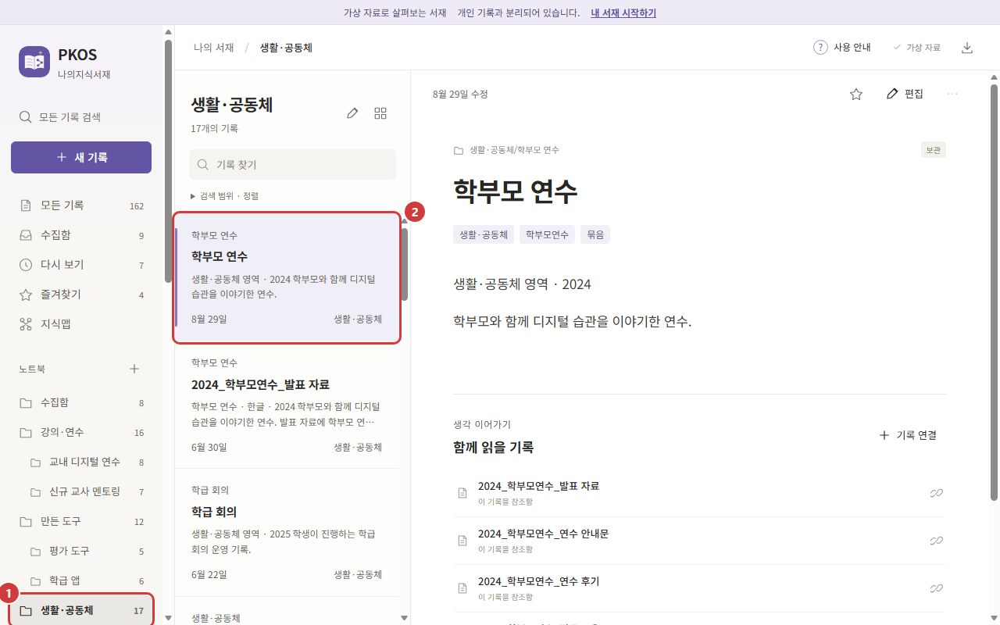
- 왼쪽 아래 「휴지통」을 누르면 정리된 카드 3장이 있습니다. 하나를 골라 「복원」을 누르면 원래 노트북으로 돌아갑니다.
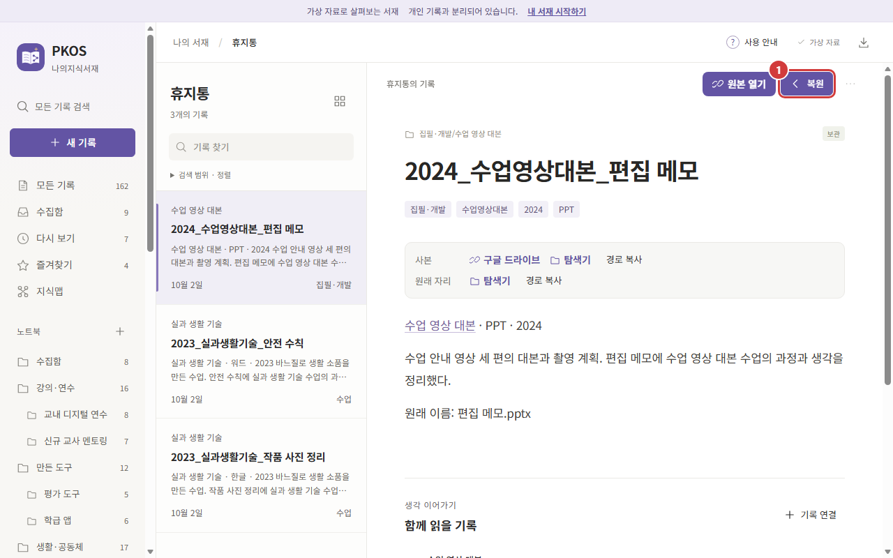
- 탐구 계획서를 다시 열고 오른쪽 위 「더 보기」(점 세 개)에서 「변경 이력 · 되돌리기」를 누릅니다. 1단계에서 고친 본문의 변경 전과 변경 후가 나란히 보이고 「이 변경 되돌리기」로 고치기 전으로 돌아갈 수 있습니다.
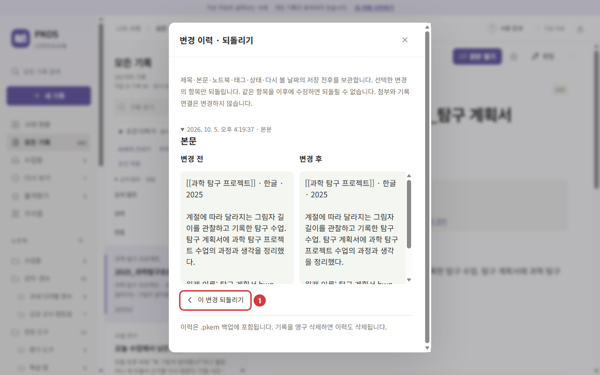
변경 이력은 제목, 본문, 노트북, 태그, 상태, 다시 볼 날짜의 저장 전후를 보관하고 백업 파일에도 들어갑니다. 첨부와 기록 연결은 이력에 남지 않습니다.
막히면: 알림은 4.5초 뒤 사라집니다. 놓쳤다면 「모든 기록」 숫자가 162인지로 확인합니다(158에 새 카드 7개를 더하고 휴지통으로 간 3개를 뺀 수). 같은 파일을 한 번 더 가져오면 5단계에서 복원한 카드가 다시 휴지통으로 가므로, 확인은 숫자로 합니다.
실습 8. 백업 내보내기 (5분)
목표: 백업 파일을 내려받고 다운로드 폴더에서 그 파일을 찾아 보여 준다.
- 「설정 · 백업」에서 「첨부를 포함한 백업 내보내기」를 누릅니다.
- 창을 닫으면 아래에 "기록과 첨부가 포함된 백업을 내보냈습니다."가 보입니다.
- Ctrl+J로 다운로드 목록을 열어
PKOS-백업-2026-10-02.pkem처럼 내보낸 날짜가 붙은 파일을 확인합니다.
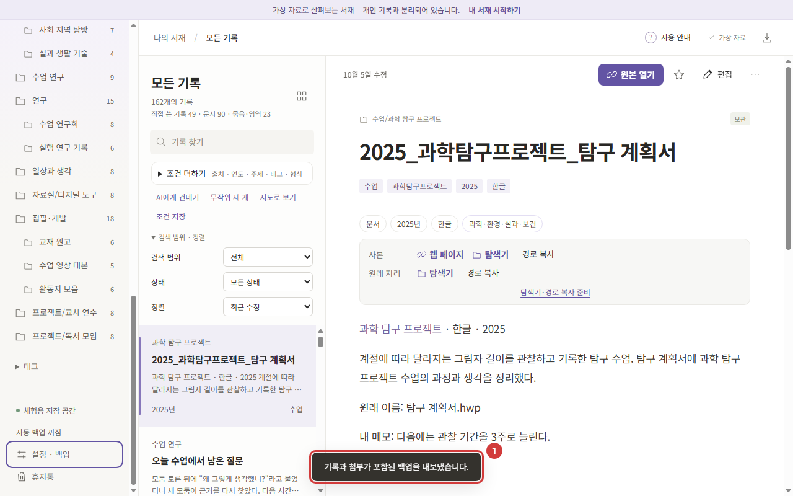
다른 PC나 다른 브라우저로 옮길 때는 그쪽에서 같은 주소를 열고 「설정 · 백업」의 「백업 파일 가져오기」로 이 파일을 고릅니다. 이번 실습의 백업은 체험 서재 백업이므로 내 서재에 가져오지 않습니다.
설정 창에는 다른 내보내기도 있습니다. 「Markdown 묶음 내보내기」는 압축을 풀면 옵시디언 보관함으로 열리고 첨부는 attachments 폴더에 들어갑니다. 「읽기용 웹문서 만들기」는 서재를 한 파일짜리 웹문서로 만들어 PKOS 없이도 읽게 합니다. 「PC 폴더 자동 백업」은 PC의 크롬·엣지에서 고른 폴더에 백업을 자동으로 써 둡니다. 내 판단으로는 카드 파일을 가져오거나 노트북을 크게 바꾼 날마다 한 번씩 내보내 두는 편이 안전합니다.
막히면: 내려받기가 막혔다는 표시가 주소창 오른쪽에 뜨면 그 표시를 눌러 이 사이트의 다운로드를 허용합니다.
실습 9. PC 선택 실습: 카드 파일 자동 반영과 탐색기 연결 (10분)
목표: 카드 파일 하나를 서재에 연결하고 설정 창에 그 파일 이름이 나오는 것을 확인한다.
카드 파일을 자주 새로 만드는 경우, 파일을 한 번 연결해 두면 앱을 켤 때마다 바뀐 카드가 자동으로 반영됩니다. 실습 7의 규칙이 그대로 적용되므로 내가 고친 카드는 덮이지 않습니다. PC의 크롬·엣지에서만 됩니다.
- 「설정 · 백업」에서 「자료 카드 파일 연결 · 켤 때 자동 반영」을 누르고
practice-2.pkem을 고릅니다. - 브라우저가 이 사이트에 파일 보기를 허용할지 물으면 허용합니다. 고를 수 있다면 '방문할 때마다 허용'을 고릅니다.
- 설정 창을 다시 열면 연결한 파일 이름과 「카드 파일 지금 다시 반영」, 「카드 파일 연결 끊기」가 보입니다.
브라우저를 다시 켜면 파일 권한이 풀리는 경우가 있습니다. 그때는 화면 위쪽에 「카드 파일 반영」 단추가 생기고 누르면 권한을 한 번 더 묻습니다. 체험 서재와 내 서재의 연결은 서로 따로입니다.
탐색기 연결 도구는 카드의 「탐색기」 단추를 누르면 파일 탐색기가 그 파일을 고른 채로 열리게 하는 작은 도구입니다. 구글 드라이브 데스크톱으로 내 드라이브를 PC에 연결해 둔 사람에게만 쓸모가 있습니다. 준비 순서는 앞의 「준비 조건」에 있습니다.
- pkos-open-tool.zip을 내려받습니다.
- 압축 파일을 오른쪽 단추로 눌러 「속성」을 열고 아래쪽에 「차단 해제」 칸이 있으면 표시한 뒤 「확인」을 누릅니다. 그다음 압축을 풉니다.
탐색기 연결 설치.cmd를 두 번 눌러 실행합니다. 현재 사용자 계정에만 등록되므로 관리자 권한을 묻지 않습니다.- PKOS로 돌아와 실습 카드의 「탐색기」를 누르고 브라우저가 외부 프로그램을 열지 물으면 허용합니다.
도구는 파일을 실행하지 않고 탐색기에서 고르기만 합니다. 실습 카드의 경로(PKOS 실습/...)는 내 드라이브에 없으므로, 실습에서는 "파일을 찾지 못해 가장 가까운 폴더를 엽니다" 안내 뒤에 내 드라이브 폴더가 열리면 정상입니다. 구글 드라이브 데스크톱이 없는 PC에서는 "구글 드라이브(내 드라이브)를 찾지 못했습니다" 안내가 나옵니다. 지울 때는 같은 폴더의 탐색기 연결 제거.cmd를 실행합니다.
막히면: 「탐색기」를 눌러도 아무 일이 없으면 도구가 설치되지 않은 PC입니다. 「경로 복사」를 누르고 탐색기 주소창(Ctrl+L)에 붙여 넣으면 같은 곳으로 갑니다.
실습 10. 마무리 점검과 체험 서재 되돌리기 (5분)
목표: 아래 점검표 8칸을 스스로 채우고 체험 서재를 처음 상태로 되돌린다.
| 점검 | 했으면 표시 |
|---|---|
| 체험 서재와 내 서재를 주소와 보라색 띠로 구별한다 | □ |
| 새 기록에 노트북과 태그를 정해 저장한다 | □ |
| 다른 기록과 직접 연결하고 「함께 읽을 기록」에서 확인한다 | □ |
| 본문 낱말로 기록을 찾는다 | □ |
| 카드 파일을 가져오고 알림의 숫자를 읽는다 | □ |
| 지식맵에서 영역을 바꾸고 선을 눌러 연결 이유를 연다 | □ |
| 휴지통에서 기록을 복원한다 | □ |
| 백업 파일을 내려받아 다운로드 폴더에서 찾는다 | □ |
- 「설정 · 백업」에서 「체험 서재 처음 상태로 되돌리기」를 누릅니다.
- 확인 창에서 「되돌리기」를 누르면 체험 서재의 기록, 첨부, 카드 파일 연결이 지워지고 가상 기록 48개로 다시 시작합니다. 내 서재는 그대로입니다.
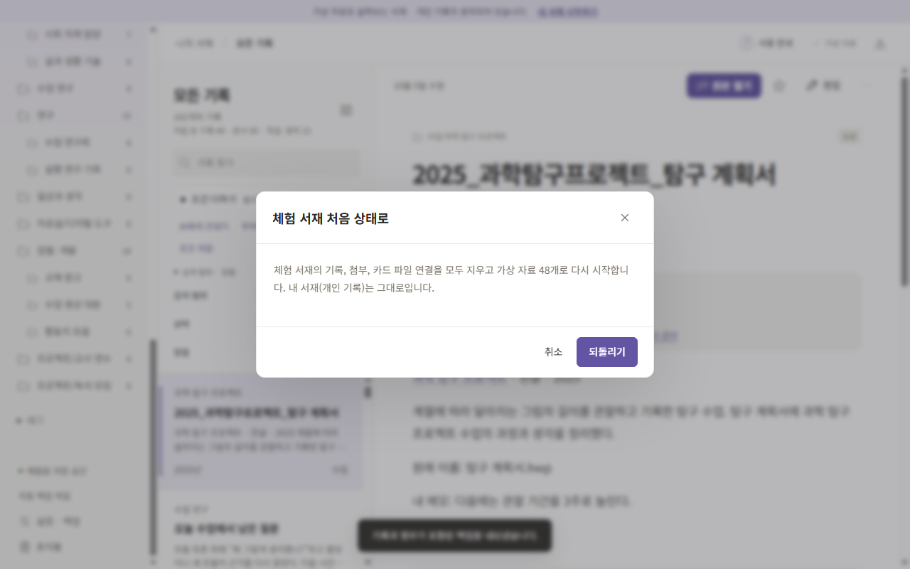
- 맨 위 보라색 띠의 「내 서재 시작하기」를 누르면 내 서재로 갑니다. 여기서부터 쓰는 기록이 내 기록입니다.
휴대폰에서 쓰기
휴대폰 브라우저에서 같은 주소를 열면 화면이 한 칸씩 바뀝니다. 목록에서 기록을 누르면 읽기 화면이 되고 왼쪽 위 「목록」으로 돌아옵니다. 노트북과 지식맵은 왼쪽 위 줄 세 개 단추를 눌러 엽니다. 노트북이나 「모든 기록」을 누르면 목록이 먼저 보입니다. 지식맵은 두 손가락으로 확대·축소하고, 점을 누르면 화면 아래쪽에 미리 보기가 열립니다.
「설정 · 백업」의 「앱으로 설치」를 누르거나 브라우저 메뉴의 '홈 화면에 추가'를 고르면 앱처럼 아이콘이 생깁니다. 설치해도 PC와 자동으로 맞춰지지는 않으므로, 휴대폰 기록을 PC로 옮길 때는 백업 파일을 씁니다.
내 주소로 가져가기
이 서재는 깃허브 공개 저장소 legoschool/pkos-library에 그대로 들어 있습니다. 깃허브 계정만 있으면 5분 안에 같은 서재를 내 주소로 운영할 수 있고 설치나 비용은 들지 않습니다.
- 깃허브에 로그인한 뒤 저장소 위쪽의 초록색 「Use this template」에서 「Create a new repository」를 누릅니다.
- 이름(예:
my-pkos)을 적고 「Public」을 고른 뒤 「Create repository」를 누릅니다. 공개 저장소에는 앱 파일만 들어가고 내 기록은 올라가지 않습니다. - 새 저장소의 「Settings」에서 왼쪽 「Pages」로 갑니다. Branch는
main, 폴더는/ (root)로 고르고 「Save」를 누릅니다. - 1~2분 뒤
https://내아이디.github.io/my-pkos/로 열립니다. 주소 끝에?demo=1을 붙이면 체험 서재가,manual/을 붙이면 이 설명서가 열립니다.
내 주소의 서재는 이 주소의 서재와 저장 공간이 따로라서 여기서 쓰던 기록은 실습 8의 백업 파일로 옮겨야 합니다. 이용 조건은 CC BY-NC 4.0(출처 표시·비영리)이며 학교와 연수에서는 사본을 만들어 고쳐 써도 됩니다.
함께 쓰면 좋은 도구도 깃허브에 있습니다. 세 도구의 사용법은 PKOS 도구 모음에 화면 사진과 함께 모아 두었습니다.
- PKOS 자료변환기: 한글, PDF, 블로그 백업 같은 자료에서 글을 꺼내 Markdown으로 만듭니다. 설치 없이 코랩에서 실행할 수 있고 「파일 → 드라이브에 사본 저장」으로 내 사본을 만듭니다.
- 자료변환기 실습 교재: 설치부터 변환까지 따라 하는 교재입니다.
자주 묻는 것
카드 파일이나 백업 파일을 고르는 창에서 파일을 못 찾겠습니다. 탐색기에서 그 파일을 오른쪽 단추로 눌러 「경로로 복사」를 고르고, 파일 고르기 창 아래 「파일 이름」 칸에 붙여 넣은 뒤 Enter를 누릅니다. 폴더를 하나씩 찾아 들어가지 않아도 됩니다.
「파일 가져오기」와 「백업 파일 가져오기」는 무엇이 다른가요? Markdown, 텍스트, 문서 파일은 「파일 가져오기」로 넣으면 기록이 되고 원본이 첨부됩니다. 백업·카드 파일(.pkem)은 어느 쪽으로 골라도 그 안의 기록이 하나하나 풀려 들어갑니다.
다른 PC에서 열었더니 기록이 하나도 없습니다. 기록은 처음 쓴 PC의 그 브라우저에만 있습니다. 처음 PC에서 백업 파일을 내려받아 새 PC로 옮긴 뒤 「백업 파일 가져오기」로 넣습니다.
「원본 열기」를 누르면 권한을 요청하는 구글 화면이 나옵니다. 원본은 카드를 만든 사람의 구글 드라이브에 있고 드라이브 공유 설정을 그대로 따릅니다. 파일 주인 계정으로 로그인하거나, 주인에게 보기 권한을 받습니다.
앱에서 고친 카드가 새 카드 파일에 덮이나요? 덮이지 않습니다. 실습 7처럼 "고친 카드 N개는 그대로 둠"으로 알려 줍니다. 새 내용을 받고 싶으면 그 카드를 휴지통에 넣고 영구 삭제한 뒤 다시 가져옵니다.
목록에 「같은 문서 2곳」이라고 붙은 줄은 무엇인가요? 같은 파일이 구글 드라이브 여러 폴더에 있어 제목과 본문 앞부분이 같은 자료 카드가 둘 이상인 경우입니다. 목록에는 한 줄만 보이고, 카드를 열면 자료 정보의 「같은 문서」에서 다른 자리를 눌러 그 카드로 갑니다. 목록 위의 기록 수에는 모두 들어갑니다.
「함께 읽을 기록」은 무엇을 보고 고르나요? 직접 연결한 기록이 먼저 오고, 그다음은 서재 전체에서 드물게 나오는 낱말이 겹치는 기록과 같은 주제 태그가 붙은 기록입니다. 연도·형식·출처 태그와 흔한 말은 세지 않아서, 같은 해에 올린 영상이라는 이유만으로 이어지지 않습니다. 같은 문서의 다른 자리와 이름이 같은 다른 판은 자료 정보 상자에 따로 나옵니다.
왼쪽 「태그」에 2025, PDF 같은 태그가 보이지 않습니다. 주제 태그를 먼저 보이고 연도·형식·출처·영역 태그는 목록 맨 아래 「연도·형식·출처·영역 태그」를 펼치면 있습니다. 같은 범위는 목록의 「조건 더하기」에서 연도·형식·출처로도 고릅니다.
지식맵이 느립니다. 「기록 수」를 500개 이하로 줄이거나 「영역」에서 한 영역만 고릅니다. 기록 수천 개를 한 번에 그리면 PC 성능에 따라 몇 초가 걸립니다.
휴대폰과 PC가 저절로 맞춰지나요? 맞춰지지 않습니다. 이 PKOS는 기록을 서버에 두지 않으므로, 기기를 옮길 때마다 백업 파일을 내보내고 가져옵니다.
브라우저 데이터를 지웠더니 기록이 사라졌습니다. 지운 기록은 브라우저에서 되살릴 수 없고 가장 최근에 내려받은 백업 파일이 있다면 「백업 파일 가져오기」에서 PKOS-백업-2026-10-02.pkem 같은 파일을 골라 그 시점의 기록과 첨부를 되돌립니다.
카드의 「탐색기」나 「경로 복사」로 파일이 열리지 않습니다. PC에 구글 드라이브 데스크톱이 깔려 있고 파일 탐색기에 「Google Drive (G:)」가 보여야 합니다. 쓰는 폴더는 오른쪽 단추 › 「오프라인 액세스 › 오프라인으로 사용」으로 두면 바로 열립니다. 드라이브 문자가 G가 아니면 「설정 › 구글 드라이브 위치」에서 바꿉니다.
서재 현황의 주제가 맞지 않습니다. 주제는 제목·태그·노트북에 든 낱말로 자동으로 붙습니다. 「서재 현황 › 주제 규칙」에서 낱말을 고치면 바로 다시 계산되고 태그는 바뀌지 않습니다.
「AI에게 건네기」는 AI에게 무엇을 보내나요? 앱은 아무것도 보내지 않습니다. 고른 기록의 제목·날짜·노트북·주소(고르면 본문까지)를 글로 만들어 복사하거나 파일로 저장할 뿐이고, 그 글을 어느 AI에 붙여 넣을지는 직접 정합니다.
변환기가 만든 마크다운을 가져오면 무엇이 들어오나요? 제목과 본문에 더해 블로그 글은 쓴 날짜, 분류(태그로), 원문 주소가 들어오고, 변환한 문서는 파일 수정일이 만든 날로 들어옵니다. 마크다운 파일은 기록의 첨부로 보관됩니다. 원문 주소가 같은 기록이 서재에 이미 있으면 그 파일은 건너뜁니다.
「드라이브 미리보기」가 비어 있거나 로그인하라는 말만 나옵니다. 미리보기는 그 파일을 볼 수 있는 구글 계정으로 로그인한 브라우저에서만 보입니다. 크롬이나 엣지 설정에서 다른 사이트의 쿠키(제3자 쿠키)를 막아 두었다면 미리보기 칸이 로그인을 이어받지 못합니다. 그럴 때는 「원본 열기」로 새 탭에서 엽니다.
드라이브 미리보기로 다른 사람이 내 파일을 내려받을 수 있나요? 아닙니다. 미리보기는 구글 드라이브 권한을 그대로 따르므로 파일을 공개하지 않습니다. 주인만 볼 수 있는 파일은 주인 계정으로 로그인한 브라우저에서만 보이고, 다른 사람에게는 「액세스 권한 필요」만 나옵니다. 기록장의 미리보기 칸은 보기 전용이라 그 칸 안에서는 내려받기·인쇄·새 창 열기가 막혀 있습니다. 기록장은 드라이브 파일을 고치거나 옮기지 않으므로 원본은 그대로 남습니다.
카드 파일과 마크다운 사본을 다른 사람에게 보내도 되나요? 보내지 않습니다. 이름·전화번호는 가렸지만 문서의 본문 앞부분이 들어 있습니다. 화면을 공유할 때도 미리보기와 본문에 실제 문서가 보이므로, 필요하면 미리보기를 닫고 체험 서재로 보여 줍니다.